Lifos Zirve Tırmanışı (Ocak 2017)
Lifos dağından daha önce bahsetmiştim, Erciyes dağının kuzeyinde Hacılar ilçesinin güney doğusunda yer alan bu dağ Barut Dağı olarak da adlandırılıyor. Oldukça dik bir eğime sahip olan bu dağa tırmanmak gerçekten çok zevkli. Bugüne kadar defalarca zirvesine tırmandım ancak ilk defa bugün anlatacağım tırmanış ile kış döneminde zirve yaptım.
Otomobilimizi Hacılar kayak tesisine park ettik, ardından teleferik ile üst durağa çıktık. Üst duraktan Lifos dağına doğru yürümeye başladık. Şehir merkezinde hiç kar olmadığı için yürüyüşte olsa olsa birkaç cm kar olur diye düşünerek kıyafet açısından yetersiz bir hazırlık yapmış olduk. Maalesef yer yer 2 metreye ulaşan bir kar tabakası bizi karşıladı, inanılmaz yorucu ve zor bir tırmanış oldu.
İki bacağımız tamamen kara batıyor, birini çektikten sonra dizimle diğer bacağımı kardan çıkarıp tekrar adım atıyordum. Bir ara ekipteki diğer arkadaş yatay olarak yuvarlanarak yol almaya çalıştı, ancak bu da çok yorucu idi. Lifosun eteğinde bir kayayı dinlenme noktası olarak belirledik ve bu noktaya kadar ilerlerdik, bu noktada ben kara uygun olmayan kıyafetlerimin azizliğine uğradım, pantolonum tamamen ıslanmış ve hatta donmuştu, pantolon bedenime temas ettikçe tekrar eriyor ve vücudumun tüm ısısını alıyordu, botlarımın içine de kar dolmuş ve çorabım sırılsıklam olmuştu, bu şekilde devam edemezdim. Pantolonumu çıkardım ve şortla tırmanışa devam etmeye karar verdim. Pantolonumu çıkardıktan sonra bir nebze de olsa ısınmıştım, havada güneş vardı ve rüzgar esmiyordu, bu avantajı iyi kullanıp en dik noktadan dikine Lifosa tırmandık, yolda bir iki tilkiden başka bir hayvana rastlamadık.
Lifos zirvede biraz dinlenip fotoğraf çektik, birkaç fotoğraf çektikten sonra telefon soğuktan kapandı, müthiş bir ayaz başladı, apar topar aşağıya inmeye başladık. Kara bata çıka yine dik noktadan aşağıya kadar indik.
Otomobile vardığımızda ayaklarımı ve bacaklarımı hissetmiyordum.
Hayatımdaki en zor tırmanışlardan birini yaşamış oldum.
Çıkarılacak dersler:
- Kışın dağa tırmanacaksanız mutlaka kar tutmayan kıyafetler ve su geçirmeyen bir bot giyin.
- Gözlük takın ve termal içlik giyin.
- Yanınızda termosta sıcak içecek olsun.
- Çikolata türü enerji verecek yiyecekler götürün.
- Rotanızı önceden çalışın, rotadan çıkmayın.
- Yedek kıyafet yanınızda bulundurun.
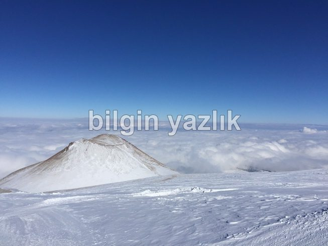
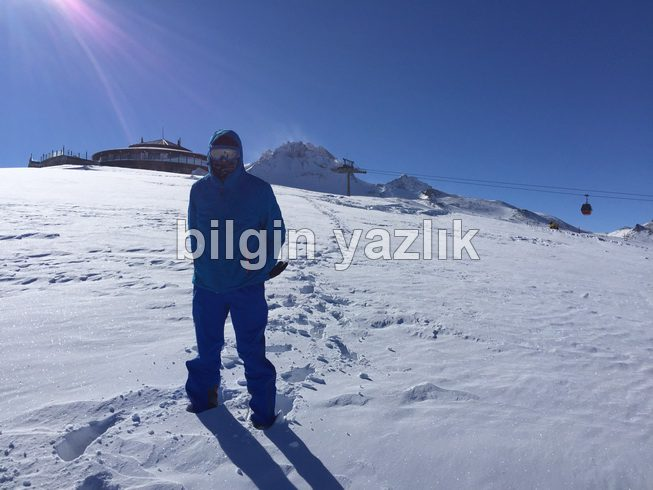
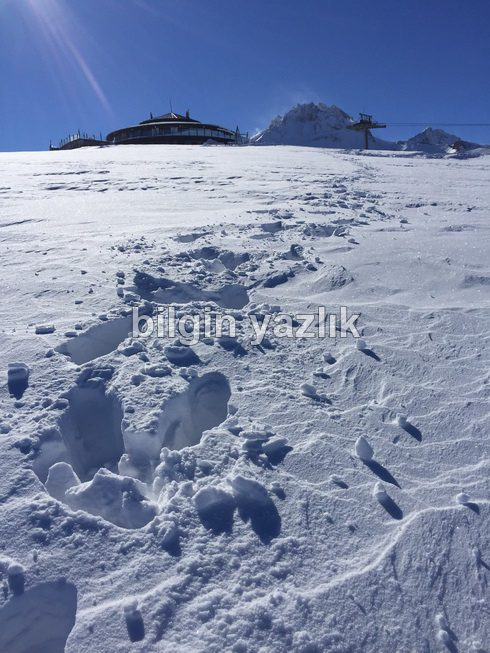
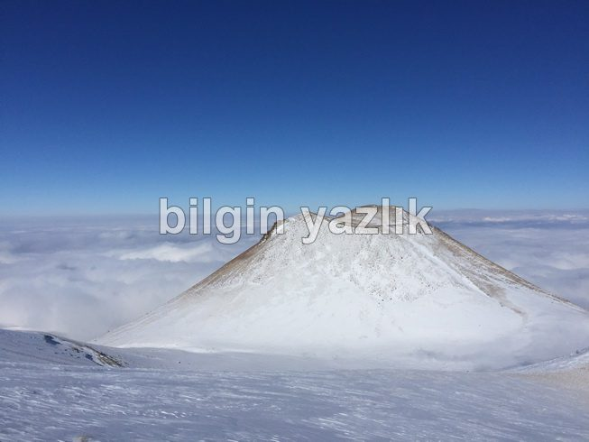
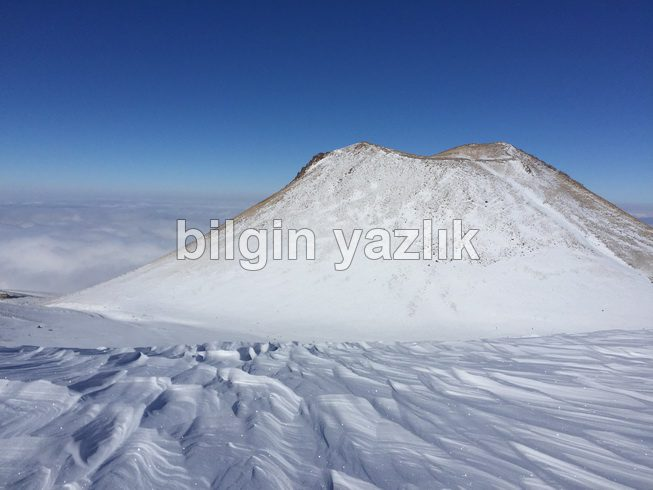
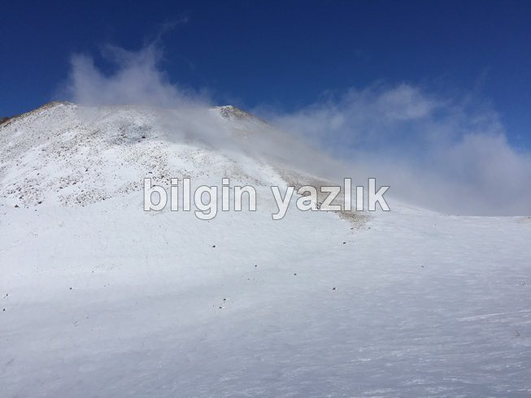
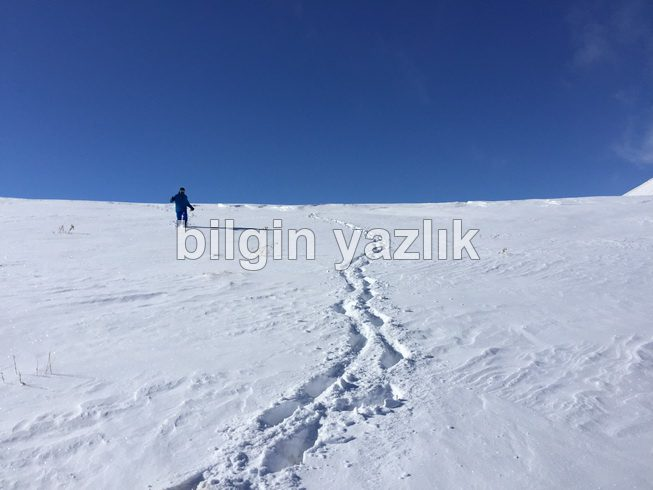
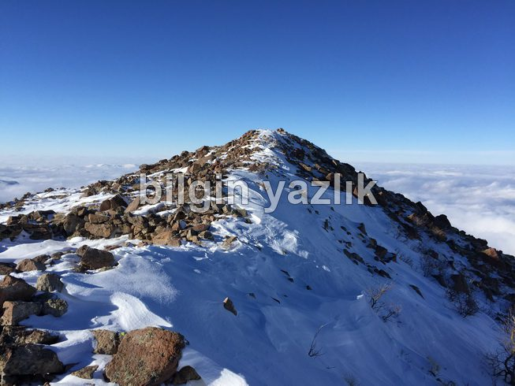
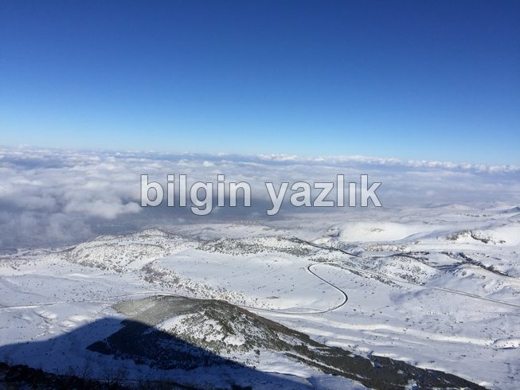
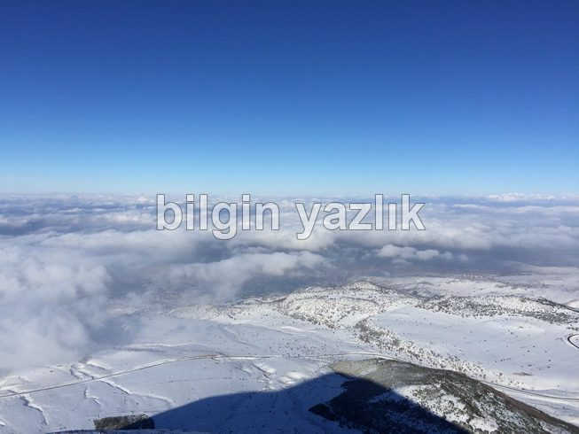
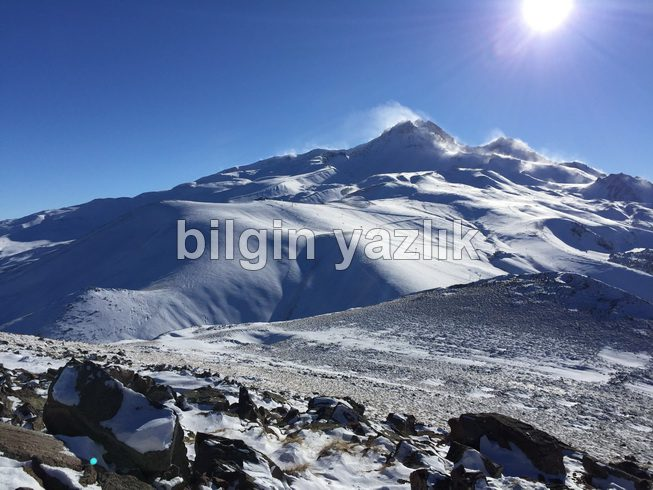
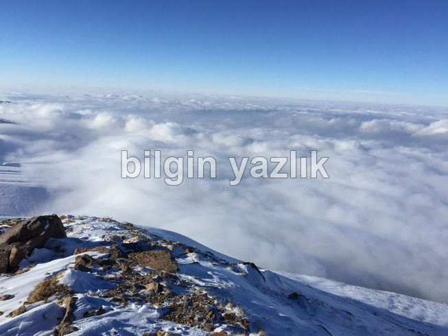
Bu yazı taliyol arşivinden taşınmıştır. · özgün kayıt